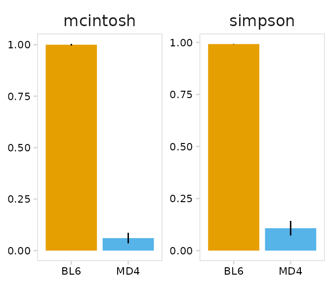
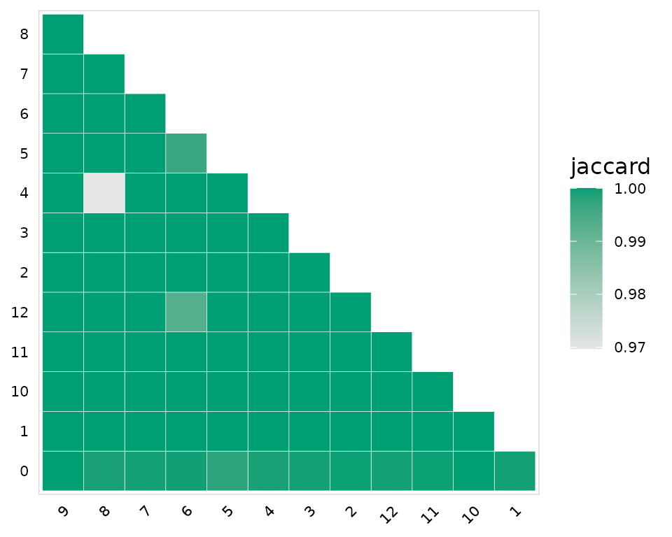

For this vignette we are using AVID-seq data. This is a method developed by the Hesselberth lab which involves staining cells with DNA-tagged antigen. The DNA tag is similar to the tags present on CITE-seq antibodies and can be detected using the 10x Genomics 5’ immune profiling kit. For this experiment we mixed splenocytes from BL6 and MD4 mice and stained with a HEL-DNA conjugate. MD4 B cells are monoclonal and specifically bind HEL.

Import V(D)J data
import_vdj() takes the output files from Cell Ranger and adds clonotype information to the meta.data for an existing Seurat or SingleCellExperiment object. For cells with multiple chains, the information for each chain is stored as a single row, separated by a semi-colon. For cells that do not have V(D)J sequencing data, NAs are added to the meta.data.
If the Seurat object contains data for multiple runs, a vector containing paths to the cellranger vdj output files for each sample can be given. When multiple runs are included in the same object, the cell barcodes will commonly contain a unique prefix for each sample. The cell prefixes can be specified using the cell_prefix argument.
# Packages
library(djvdj)
library(Seurat)
library(here)
library(tibble)
library(purrr)
library(dplyr)
library(ggplot2)
library(cowplot)
# Create vector of paths pointing to cellranger output
paths <- here("data/avid/bcr/outs")
so_avid <- import_vdj(
input = so_avid, # Seurat object
vdj_dir = paths, # cellranger directories
filter_chains = TRUE, # Only include productive chains
filter_paired = FALSE # Only include clonotypes with paired chains
)Take a look at the meta.data to see the V(D)J data added to the object.
so_avid@meta.data %>%
as_tibble() %>%
select(19:35)
#> # A tibble: 7,137 × 17
#> clonotype_id chains n_chains cdr3 cdr3_nt cdr3_length cdr3_nt_length
#> <chr> <chr> <int> <chr> <chr> <chr> <chr>
#> 1 clonotype91 IGH;IGK 2 CVKGY… TGTGTG… 14;10 42;30
#> 2 NA NA NA NA NA NA NA
#> 3 clonotype92 IGH;IGK 2 CARGR… TGTGCA… 13;11 39;33
#> 4 NA NA NA NA NA NA NA
#> 5 NA NA NA NA NA NA NA
#> 6 NA NA NA NA NA NA NA
#> 7 NA NA NA NA NA NA NA
#> 8 clonotype94 IGH;IGK 2 CTVSY… TGTACC… 14;11 42;33
#> 9 clonotype95 IGH;IGK 2 CARSY… TGTGCA… 17;11 51;33
#> 10 clonotype96 IGH;IGK 2 CARSR… TGTGCA… 9;11 27;33
#> # … with 7,127 more rows, and 10 more variables: v_gene <chr>,
#> # d_gene <chr>, j_gene <chr>, c_gene <chr>, isotype <chr>, reads <chr>,
#> # umis <chr>, productive <chr>, full_length <chr>, paired <lgl>Clonotype Abundance
To identify the top clonotypes in each sample or cluster, clonotype abundance can be calculated using the calc_abundance() function. These calculations can be performed on a per-cluster or per-sample basis by also providing a meta.data column containing cell labels.
so_avid <- calc_frequency(
input = so_avid,
cluster_col = "mouse", # Column containing cell clusters to compare
data_col = "clonotype_id" # Column containing clonotype IDs to use
)For each ‘calc’ function provided by djvdj, there is a matching ‘plot’ function that will generate a summary plot. The plot_abundance() function will plot clonotypes ranked by abundance. As expected we see that most MD4 B cells share the same clonotype.
clrs <- c(
BL6 = "#E69F00",
MD4 = "#56B4E9"
)
plot_clonal_abundance(
input = so_avid,
cluster_col = "mouse", # Column containing cell clusters to compare
n_clones = 10, # Number of top clonotypes to plot
type = "bar", # Type of plot, 'bar' or 'line'
plot_colors = clrs
)
Repertoire Diversity
The function calc_diversity() will calculate repertoire diversity based on the number of cells that share each clonotype. The cluster_col argument can be used to group cells based on a meta.data column prior to calculating diversity. calc_diversity() uses the R package abdiv for performing diversity calculations and any abdiv diversity function can be specified using the method argument. It is important to read the abdiv documentation to ensure the selected function is appropriate for your analysis.
Possible methods for calculating diversity include:
[1] "berger_parker_d" "brillouin_d" "dominance"
[4] "heip_e" "invsimpson" "kempton_taylor_q"
[7] "margalef" "mcintosh_d" "mcintosh_e"
[10] "menhinick" "pielou_e" "richness"
[13] "shannon" "simpson" "simpson_e"
[16] "strong" In this example we are calculating the Shannon diversity for each sample in the orig.ident meta.data column.
so_avid <- calc_diversity(
input = so_avid,
cluster_col = "mouse", # Column containing cell clusters to compare
method = abdiv::shannon # abdiv method to use
)The plot_diversity() function will create plots summarizing repertoire diversity for each sample. A named list of functions can also be passed to plot multiple metrics. Two different metrics are shown in the example below. As expected, BL6 B cells have a very diverse repertoire, while MD4 cells have a restricted repertoire.
# Metrics to plot
fns <- list(
"simpson" = abdiv::simpson,
"mcintosh" = abdiv::mcintosh_d
)
plot_diversity(
input = so_avid,
cluster_col = "mouse", # Column containing cell clusters to compare
method = fns, # abdiv method to use
plot_colors = c("#E69F00", "#56B4E9")
)
Repertoire Overlap
To compare repertoires for different samples or clusters, calc_similarity() can calculate a variety of different similarity metrics. The cluster_col argument should be used to specify the meta.data column containing cell groups to use for comparison. Like calc_diversity(), an abdiv function can be specified with the method argument. It is important to read the abdiv documentation to ensure the selected function is appropriate for your analysis.
Possible methods for calculating repertoire similarity include:
[1] "binomial_deviance"
[2] "bray_curtis"
[3] "bray_curtis_balanced"
[4] "bray_curtis_gradient"
[5] "canberra"
[6] "chebyshev"
[7] "chord"
[8] "clark_coefficient_of_divergence"
[9] "correlation_distance"
[10] "cosine_distance"
[11] "cy_dissimilarity"
[12] "euclidean"
[13] "geodesic_metric"
[14] "hamming"
[15] "hellinger"
[16] "horn_morisita"
[17] "jaccard"
[18] "jaccard_nestedness"
[19] "jaccard_turnover"
[20] "kulczynski_first"
[21] "kulczynski_second"
[22] "kullback_leibler_divergence"
[23] "manhattan"
[24] "mean_character_difference"
[25] "minkowski"
[26] "modified_mean_character_difference"
[27] "morisita"
[28] "rms_distance"
[29] "rogers_tanimoto"
[30] "russel_rao"
[31] "ruzicka"
[32] "ruzicka_balanced"
[33] "ruzicka_gradient"
[34] "sokal_michener"
[35] "sokal_sneath"
[36] "sorenson"
[37] "sorenson_nestedness"
[38] "sorenson_turnover"
[39] "weighted_kulczynski_second"
[40] "yule_dissimilarity" By default calc_similarity() will add a new meta.data column for each comparison. In this example we are calculating the jaccard dissimilarity index for all combinations of clusters present in the seurat_clusters column.
so_avid <- calc_similarity(
input = so_avid,
cluster_col = "seurat_clusters", # Column containing cell clusters to compare
method = abdiv::jaccard # abdiv method to use
)A heatmap summarizing the results can be generated using the plot_similarity() function. Values closer to 1 indicate minimal overlap between the clusters.
plot_similarity(
input = so_avid,
cluster_col = "seurat_clusters", # Column containing cell clusters to compare
method = abdiv::jaccard, # abdiv method to use
plot_colors = "#009E73",
color = "white" # Additional ggplot options
)
Gene Usage
The V(D)J data imported from Cell Ranger also includes the V(D)J identified for each chain. The function calc_gene_usage() will calculate the fraction of cells expressing each V(D)J gene and produce a table summarizing the results. The chain argument can be used to specify the chain(s) to use for calculating gene usage, by default results for all chains will be included.
In this example we are summarizing the usage of different V segments for the IGH chain
calc_gene_usage(
input = so_avid,
gene_cols = "v_gene", # Column containing genes
cluster_col = "mouse", # Column containing cell clusters to compare
chain = "IGH", # Chain to calculate gene usage for
chain_col = "chains" # Column containing chains
)
#> # A tibble: 192 × 5
#> v_gene mouse n_cells freq pct
#> <chr> <chr> <dbl> <int> <dbl>
#> 1 IGHV1-11 BL6 3694 2 0.0541
#> 2 IGHV1-11 MD4 126 0 0
#> 3 IGHV1-12 BL6 3694 27 0.731
#> 4 IGHV1-12 MD4 126 0 0
#> 5 IGHV1-15 BL6 3694 75 2.03
#> 6 IGHV1-15 MD4 126 0 0
#> 7 IGHV1-18 BL6 3694 82 2.22
#> 8 IGHV1-18 MD4 126 0 0
#> 9 IGHV1-19 BL6 3694 59 1.60
#> 10 IGHV1-19 MD4 126 0 0
#> # … with 182 more rowsThe function plot_gene_usage() can be used visualize gene usage across clusters. Using the yaxis argument, the percentage of cells (percent) or total number of cells (frequency) expressing each gene can be shown. The number of top genes (most frequent) to plot can also be specified with n_genes.
plot_gene_usage(
input = so_avid,
gene_cols = "v_gene", # Column(s) containing genes
type = "bar", # Type of plot, 'heatmap' or 'bar'
chain = "IGH", # Chain to plot
n_genes = 50, # The number of top genes to plot
plot_colors = "#0072B2"
)By passing multiple columns to gene_cols, the frequency of V-J gene pairings can also be summarized. In this example we are only looking at IGK chains.
calc_gene_usage(
input = so_avid,
gene_cols = c("v_gene", "j_gene"), # Column(s) containing genes
cluster_col = "mouse", # Column containing cell clusters to compare
chain = "IGK" # Chain to plot
)When multiple gene columns are passed to plot_gene_usage(), a list of plots will be returned, one for each cluster in the cluster_col column.
ggs <- plot_gene_usage(
input = so_avid,
gene_cols = c("v_gene", "j_gene"), # Column(s) containing genes
cluster_col = "mouse", # Column containing cell clusters to compare
chain = "IGK", # Chain to plot
plot_colors = "#6A51A3",
n_genes = 20
)
plot_grid(plotlist = ggs)